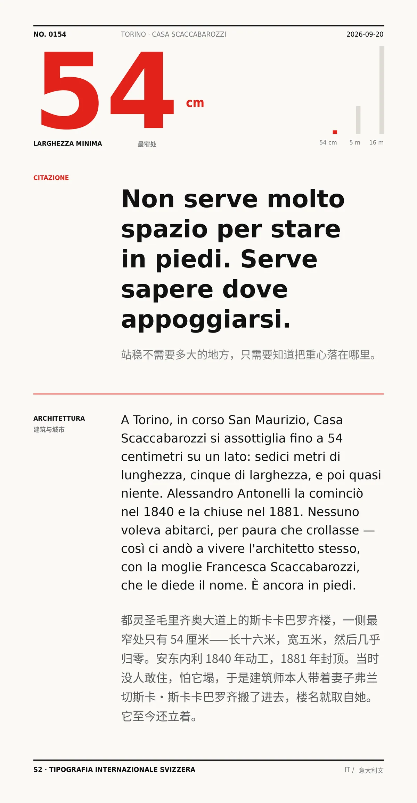

Non serve molto spazio per stare in piedi. Serve sapere dove appoggiarsi.（站稳不需要多大的地方，只需要知道把重心落在哪里。）
A Torino, in corso San Maurizio, Casa Scaccabarozzi si assottiglia fino a 54 centimetri su un lato: sedici metri di lunghezza, cinque di larghezza, e poi quasi niente. Alessandro Antonelli la cominciò nel 1840 e la chiuse nel 1881. Nessuno voleva abitarci, per paura che crollasse — così ci andò a vivere l'architetto stesso, con la moglie Francesca Scaccabarozzi, che le diede il nome. È ancora in piedi.（都灵圣毛里齐奥大道上的斯卡卡巴罗齐楼，一侧最窄处只有 54 厘米——长十六米，宽五米，然后几乎归零。安东内利 1840 年动工，1881 年封顶。当时没人敢住，怕它塌，于是建筑师本人带着妻子弗兰切斯卡·斯卡卡巴罗齐搬了进去，楼名就取自她。它至今还立着。）
冷知识由执笔的模型自行查证。逐条断言、来源与所引原句存档在纯文字副本里，未经程序逐字校验，留作事后核实。